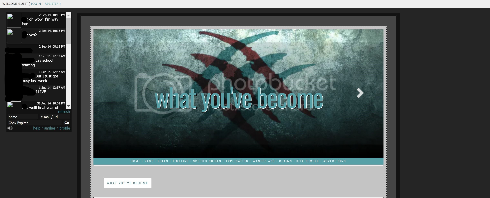
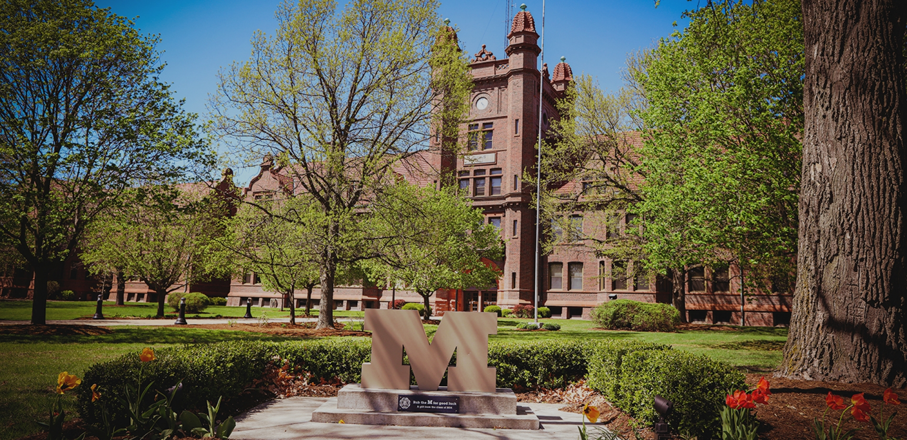

While a traditional résumé may give the broadstrokes of my professional life, my professional development is much more nuanced than just the institutions where I've worked. Below I have outlined the traditional 'jobs/professional/education' experiences, I have also talked about the experience that first caused my exposure to coding. For the sake of my own memory, I will be doing this chronologically.

A screencapture of my last roleplaying site. While the graphics were created by me in photoshop, I am not responsible for the code that made it pretty.
For all of my teen years into my early twenties, I was a part of online roleplaying forums. This is somewhat like Dungeons and Dragons without the dice or really the structure a DM can bring to a campaign. Essentially, it was like writing a story with a bunch of strangers on the internet. While I started just as a player, eventually I became an administrator. I am always cautious to say that I was a website administrator because my definition is different from the main stream. I was primarily responsible for accepting new members onto our forums (specifically approving their character concepts), creating site wide graphics, and these forums are where I first began to dip my toes into coding. I never made a wholy original background for the forums I adminned for but the roleplaying community had a pleathora of individuals who were versed in the forums framework and would provide codes for other individuals to use and customize. For the most part, I was changing CSS values and trouble shooting html and light javascript without really understanding how the code worked.
The Universities
Millikin University

A Photo of Shilling Hall , where I spent most of my time at Millikin, from Millikin's website.
In 2015, I graduated with a BA in English Creative Writing from Millikin University with honors and as a James Millikin Scholar. James Millikin Scholars are specifically students who qualified through the university's honors program. Honors students took honors level courses in a variety of specialized studies in place of their general studies credits. Personally, I took courses in Ethics, Musicology, the concept of Infinity, Campaigns and Elections (during the election of 2012), and Anarchy. Then, honors students may apply to become James Millikin Scholars, who take on capstone projects for their final two years of school. Personally, I wrote the first draft of a novel that drew from the zombie craze that was going on at the time, and coincedencly given the state of 2020/2021, dealt with the aftermath of a catastrophic event when things went back to normal and the psychological impact of survivial when the enemy is not human but has a human face. While I did go back and tweak parts of the novel while in graduate school, the current pandemic has sort of soured my ability to look back on my post-post-apocolyptic novel without being a little saddened by the state of the world.
For my first year and a half at Millikin, I was a part of the exploritory studies program as I waffled on what was the correct path for me. If I had a magic redo button, I would doubtlessly choose to go to community college first or even take a gap year before I went to academy but at the time, I thought college was the right choice for me and I had been accepted into the honors program. I felt that if I didn't go now, I may not go at all. During my exploritory studies days, I took courses in History (specifically european history and WWII ), psychology, philosophy, pre-law, anthropology, and sociology which I would have graduated with a minor in but was unable to take the final course for the minor. At the time, I knew I was good with computers and I was still engaging in the roleplaying communities, but it did not occur to me to pursue a career in tech at the time.
University of St. Louis - Missouri (UMSL)
University of Missouri St. Louis' current official logo
At the end of my undergraduate education, I had gotten a little hint of how teaching creative writing could be through a teaching assistant role in which I lead an introductory course on creative writing. At the time, my intentions were to obtain the graduate degree and then work at a University as a professor. My tenure at UMSL sort of proved me wrong. My mentors there pretty much told all of us that there weren't full time positions available for teaching at the collegiate level. While other may have considered that time to gracefully bow out, I figured it would be better just to complete the program: keep exploring writing and see where it would take me. While at UMSL, I worked for the Natural Bridge Literary Journal as an assistant editor. This role was more about reading through and identifying submissions that were of noteworthy quality. I loved the collaborative effort that we used to determine stories and would throw my weight passionately behind what I found good and against what I thought wasn't of good quality. Through that experience, I started to search for work as an Editor.
The Jobs
While this is not a full list of my part time positions, I tried to emphasis the ones that either influenced my career in Tech or gave me good fundamentals.
Part-Time
Online Editor
I would consider this my first forray into remote work. Towards the end of my time at Millikin, I started to work for the school newspaper, The Decaturian. While I wrote a few very college days opinion Articles, my primary role was as the Online Editor. It was my responsibility to take the Articles and the pictures captured by the staff and upload them onto the newspaper's website. My position primally required me to do some light editing with photoshop and work within a WordPress framework. I made sure that the Articles were properly attributed to the correct author, had their corresponding images, and were laid out in a somewhat visually appealing way.
Banquet Server
I worked for Orlando's Banquet Inc after I graduated from Millikin up until March 2020. Through this role, I learned how to deal with customers, how to work on a closeknit team, and mostly, how to deal with on the job stressful situation. Whether it was a needy bride, a misscommunication that needed to be quickly corrected, or just how to push myself through a sixteen hour day; my work at Orlando's was instrumental in teaching me to be a good coworker and on occasion a good leader.
Full-Time
Digital Mailroom Team Member
I have been a member of the Digital Mailroom since February 25, 2019 for a company called DataServ. DataServ is a SaaS company that helps automate companies' accounts payable departments. My biggest job for DataServ has always been finding a simple way to describe my job. Primarily, day to day, the Digital Mailroom ingests paper and emailed invoices for multiple clients (some international and many local), converting the physical copies into digital form and capturing data from all invoices. In conjuction with an offshore vendor and OCR technology, my primary role is quality assurance. I make sure that the invoice information has been properly captured both in the general sense (invoice numbers, date, invoice totals) and information that the client has specifically requested (tracking numbers, currency codes, etc.) Before the end of my first year, I had become a top performer in my department, processing documents at a rate of over 1000 pages per hour. I joined the Trainer's team the following year and performed onboarding training for employees who joined the department after me and performed knowledge share sessions with tenured coworkers. I got a new hat during 2020, joining the Testing team. In this role, I got closer to the technology side of my department. Though I do not look at actual code, I am responsible for external testing in the companies test environment, specifically for our inhouse software that allows us to do date capture, including assuring that the correct data is written within our interal sql tables. Even with a pandemic and switching to full time remote work, I've kept these plates all spinning.
Where I'm Going
My first post-college job search was a lesson in humility. As a young, brash freshly graduated adult with looming student loans, I narrowed my focus to only positions that were related to my field: all the jobs that said editor or were similiar to editorial positions. I wanted a position that would allow me to kick start my rat race at the second mile marker. I started with all my wants and needs as precurser to my application. I got a few interviews, no offers, and a lot of rejections. Then I spread my net out a little further, still within my field of expertise but adding positions like administrative assistant (I had worked as an office assistant as a senior in high school as part of a work release program) and anything really tangentially related to English and original career goals. Then another few months past and I was sending my resume to whatever job would have my bare minimum needs: printing operators, IT specialists, anything I thuoght I could do successfully. It wasn't until I departed completely from my degree and took a chance on my technology roots that I found and applied for my job at DataServ - my first official adult job. So, when I think about where I'll go once I have finished LC101, I think about what I consider the mistakes of my past. In essense, I plan to go where the wind takes me. If there is a position that I am qualified for that will help me get to the next big step of my adult life, then I'm going to go for it. However, I am partial to development.
So when it comes to what comes next once I've completed LC101 and embraced the technology lover in me fully, I believe I'm going to start in the reverse: I am going to cast a wide net. Personally, I'm partial to development. Coding is the kind of challenge that keeps my interest while simultaneously providing a tangible result of my work. However, I am cautious to declare that development is the only path for me and all others must be shunned. If I have the skills then I will apply for the position. Even so, my hope will always be in development.